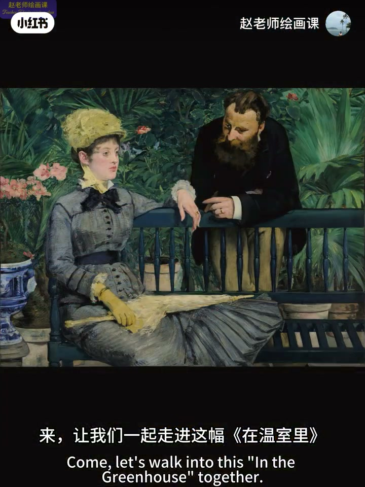
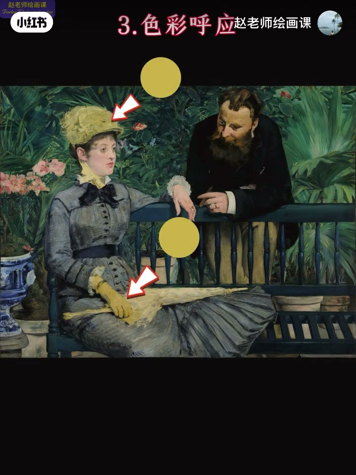
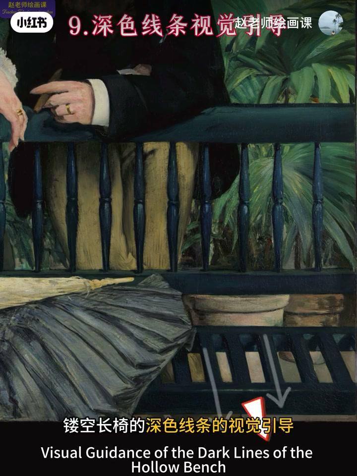
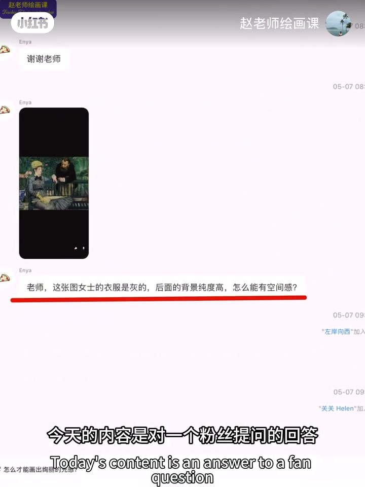

内容要点
远景再清晰，也常不如近景人物抓眼。接上期远景，本期看马奈《在温室里》如何用九个办法暗示近景：冷暖与明度强对比、色彩呼应、三角透视与形状引导、重色块与镂空长椅线、高饱和花瓶吸引等。翠绿背景不怕「跳」——它服务冷色基调与主题；花瓶既拉近前景又暗示疏远。柯罗缩影他人、莫奈近大远小／刻画递进作对照；作业留给维米尔《小街》。
知识结构
对比／呼应／透视／形状／高饱和等暗示近景。
翠绿保冷基调；花瓶引导＝疏远隐喻。
柯罗抓前景；莫奈透视／深度；维米尔作业。
突出近景不是只把东西画大：叠加强对比、呼应、引导线与高饱和锚点，并让每个「抢眼」元素同时服务主题。
00:00-01:39马奈温室：九法暗示近景
开场：远景建筑再清晰，也难敌近景人物吸引力。走进《在温室里》——马奈用了整整九个办法暗示近景：暖黄手套伞与冷灰衣强烈冷暖；同位置浅黄深灰强烈明度；上下黄的色彩呼应；头顶到雨伞大三角透视；裙摆三角形状引导；发—蝴蝶结—腰带重色块视线；高饱和青色花瓶吸引；右下花盆长椅明度加冷暖；镂空长椅深色线引导。
总结：强化明度冷暖、制造呼应、设置色块线条与形状透视引导、利用高纯度吸引——九手段暗示近景空间感。00:20／00:46／01:08／01:35。




01:39-02:46翠绿不怕跳与主题服务
回应粉丝：背景绿纯度这么高不怕跳？马奈不怕，反用多手段稳住空间秩序。这片翠绿帮助营造冷色基调；冷色抑制情绪，或为凸显女主角高冷、上流疏离，或隐喻男女情感微妙变化——值得思考。
另问：高饱和花瓶放左下不怕抢中心？花瓶除拉近前景，还引导视线、暗示女人对男人的疏远，与双手方向安排用意同构——一切为主题服务。01:43／02:23。
02:46-04:04柯罗／莫奈与维米尔作业
柯罗作品中前景两人牢牢抓住视线，故远景建筑再清晰也不敌有生命力的人物；为突出二人，其他人物或缩小或置于阴影。莫奈一例几乎只用近大远小；另一例从水面到房屋树林天空按刻画深入程度表现空间。
作业：维米尔《小街》为何不因远处醒目深红块而头重脚轻？评论区见。02:56 柯罗前景可指认。
完整转录（59段）
以下文本由 Whisper medium 模型自动转录，可能存在少量识别误差，已尽可能修正。
即使远景中的建筑画得这么清晰
也完全不能和近景中的人物的视觉吸引力相媲美
上一期呢 我们了解了处理远景的方法和思路
那怎么画近景
来 让我们一起走进这幅在温室里
看看马奈是如何巧妙地突出近景的
说出来你可能不信
马奈用了足足九个办法暗示了近景空间
第一 暖黄色手套、伞与冷灰色衣服的强烈冷暖对比
第二 同位置浅黄和深灰的强烈明度对比
三 上下两块黄的色彩呼应
四 从头顶到雨伞的大三角形形成的透视引导
五 女人裙摆三角形色块的形状引导
六 从头发到蝴蝶结再到腰带几个重色块的视线引导
第七 高宝和裙青色花瓶的视觉吸引
第八 右下角花盆和长椅明度加冷暖的强对比
最后 镂空长椅的深色线条的视觉引导
总结一下 马奈通过强化明度冷暖对比
制造色彩呼应
设置色块线条的视觉引导
形状透视引导
利用高纯度色彩视觉吸引等九个手段
暗示了近景的空间感 厉不厉害?
今天的内容是对一个粉丝提问的回答
她说 为什么背景的绿色纯度这么高 不怕跳吗?
你看 马奈根本没怕跳
反而用了这么多高明的手段 妥妙地处理了空间秩序
其实 仔细看 这片翠绿 可以帮助营造画面的冷色基调
而冷色对情绪的乙质 是不是有可能想凸显女主角高冷的气质
或者表现上流贵族人际关系的复杂与疏离
亦或是 画中男女情感已经出现微妙变化的隐喻呢?
这值得思考
另外 还有一个问题 我帮大家提出来
为什么高宝和花瓶要放在左下角 不怕干扰视觉中心吗?
很简单 花瓶除了拉近前景之外 还在引导观众的视线
暗示女人对男人的疏远
和两个人手方向的安排 背后的用意如出一辙
这就叫一切都要为主题服务
更多的色彩原理 在我六月底的色彩系统课程里
有详细的讲授和针对性的训练
详情请查看主页制定语迹
在《科罗》的这幅作品中 前景的两个人物牢牢地抓住了观众视线
所以 即使远景的建筑画得这么清晰
也完全不能和有生命力的人物的视觉吸引力相媲美
同时 为了突出这两个人物
《科罗》让其他人物或缩小 或置于阴影中
末代的这幅作品中 近景处理只用了一个办法
就是近大远小的透视规律
另一幅从水面到房屋 到树林再到天空
按照刻画的深入程度表现的空间关系
好了 关于色彩与空间就讲这么多
留一个作业
在维米尔的《小街》中
为什么画面没有因为视线远处的深红色块的醒目而头重脚轻呢?
期待大家精彩的答案 我们评论区见
原创不易 感谢三连
欢迎关注我的绘画课
让你的绘画水平与审美能力双丰收
下期见 拜拜